Skeleton field variants A2
Four new skeletons, built from your front and back concepts with thicker bones to match their chunky proportions. Each shows your concept pair, then the game sprite in six facings, walk, attack, hit and death. They're in the game's monster list but don't spawn yet: the main chat sets where they appear and their stats. Existing monsters are unchanged.
Crypt Spearman
new · skeleton family · game id spearman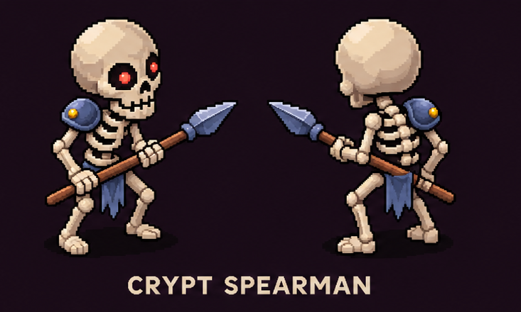
Long spear held low across the body in both hands, a leaf-shaped head; one round slate pauldron with a gold rivet on the right shoulder; a torn blue rag at the hips.
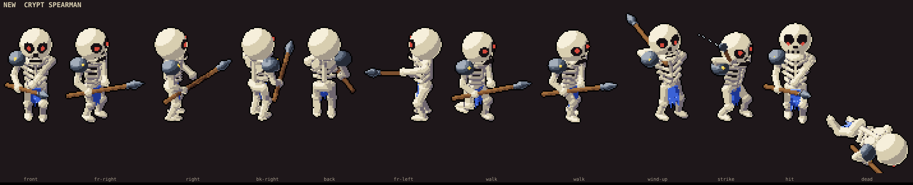
Bone Axeman
new · skeleton family · game id axeman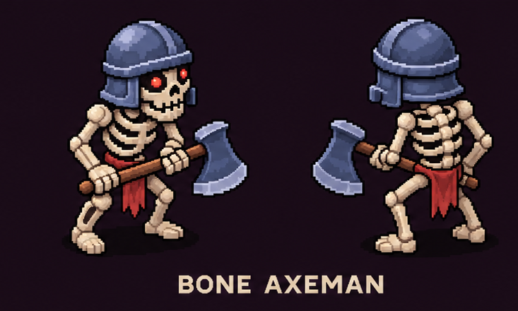
Open slate helm with cheek guards and a neck guard, the face showing; a long-hafted axe with a broad flared head held across the body; a torn red rag.
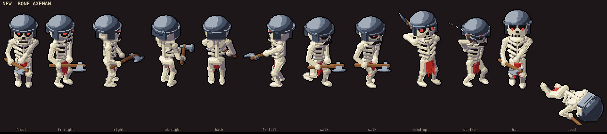
Grave Crossbowman
new · skeleton family · game id gravebow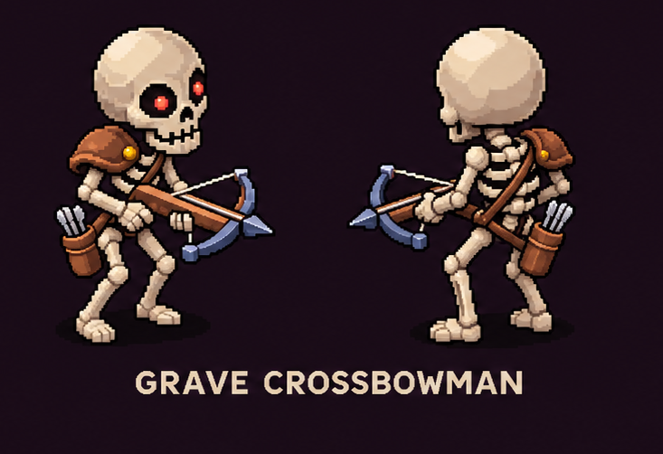
Crossbow with a wooden stock and a slate prod, held at the hip and raised level to shoot; a leather pauldron, a strap across the chest, and a bolt quiver on the left hip (seen from behind too).
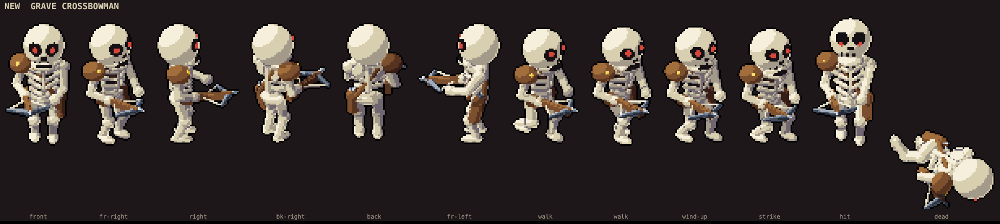
Tomb Guard
new · skeleton family · game id tombguard
Round kettle helm with a brim, slate cuirass and both pauldrons; a spiked mace low at its side and a tall red tower shield with a slate rim on the other arm; red rag.
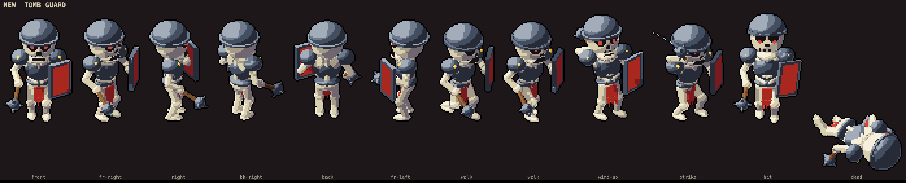
Silhouettes
flat black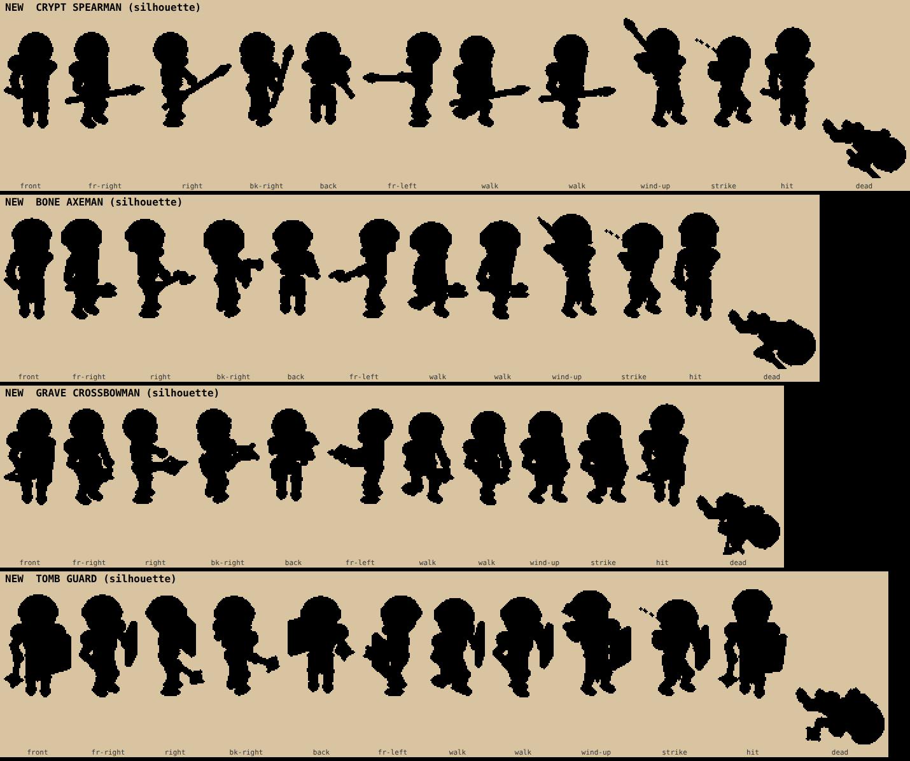
Every pass
3 passesPass 1: the armor came out pale silver, and the axeman's helm was a big square bucket. Pass 2: the helm was fixed, but the darker metal went near-black and lost the dark floor, so pass 1's color was kept. Pass 3: a new blued-steel material between the two, closer to your slate blue; it won both orders.
Pass 1
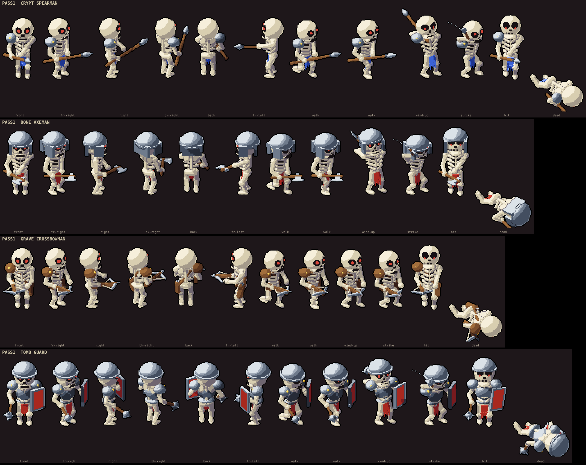
Pass 2
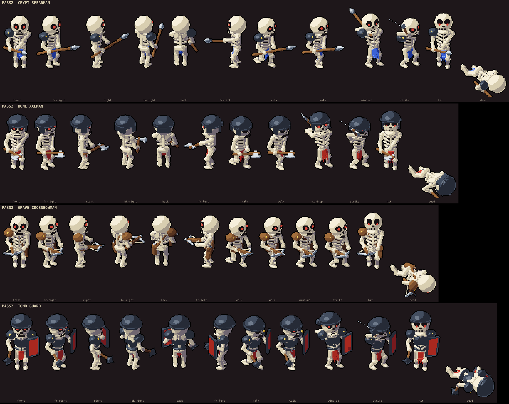
Pass 1 vs pass 3
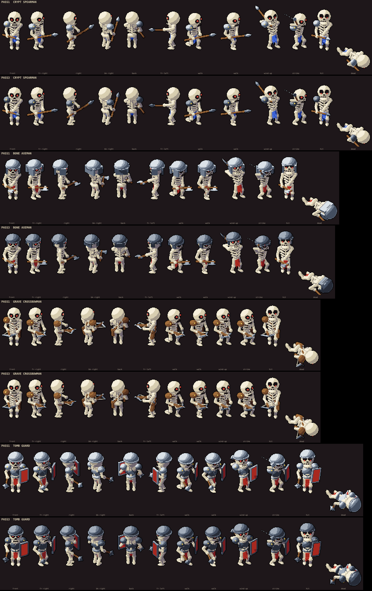
Notes
- Attacks: the spearman and axeman use the skeletons' overhead chop for now. A spear thrust and a two-handed axe swing are a follow-up if you want them.
- Keep, tweak or reject each one. Name the frame or part if something's off.